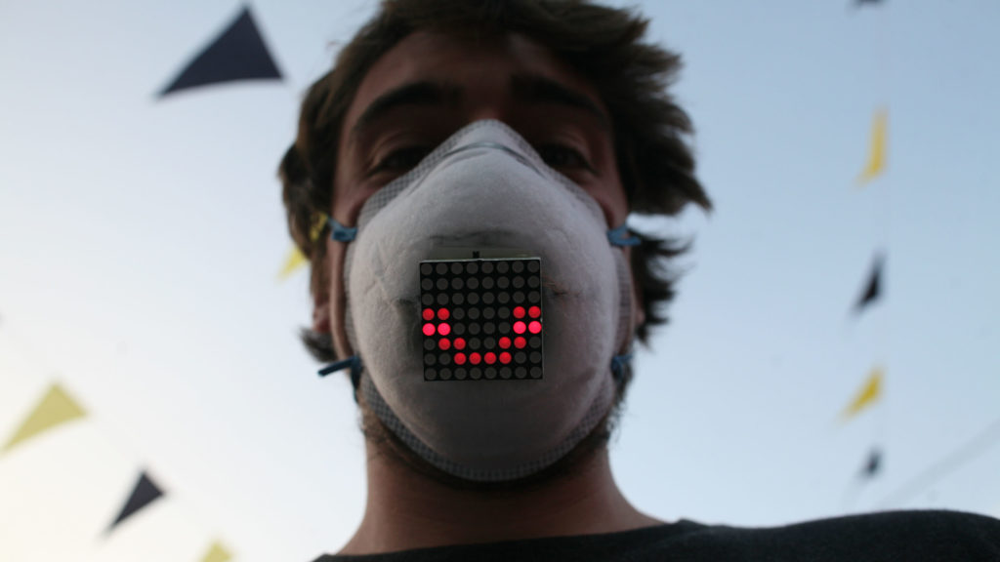

2015
An emotionally transparent pollution mask.
Air pollution masks are designed to hide the face. UnMask inverts this — it makes invisible emotions visible while filtering invisible pollutants.
The mask uses embedded LEDs to display the wearer's emotional state in real time, turning a defensive object into a communicative one. In cities where masks are a daily necessity, UnMask asks what we lose when we cover our faces — and whether technology can give something back.
The project sits at the intersection of wearable technology, urban health, and human expression.